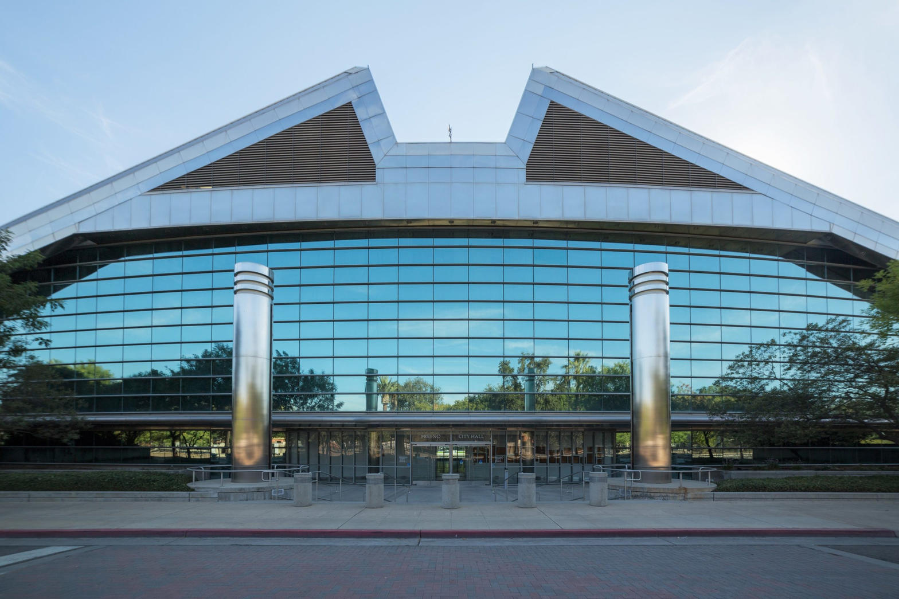
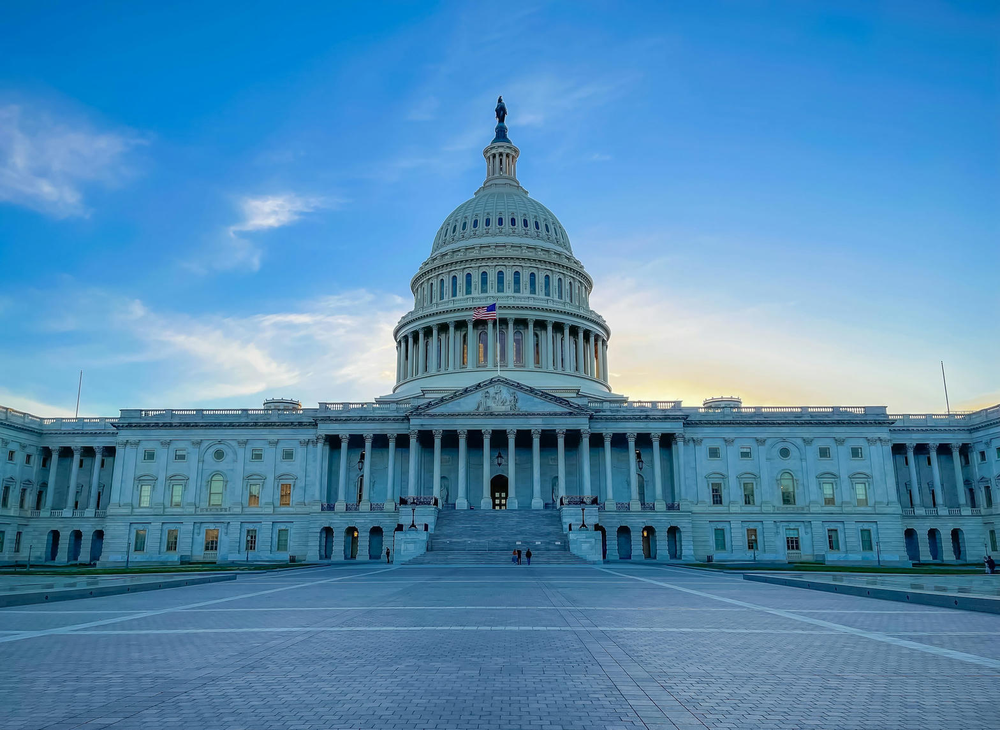
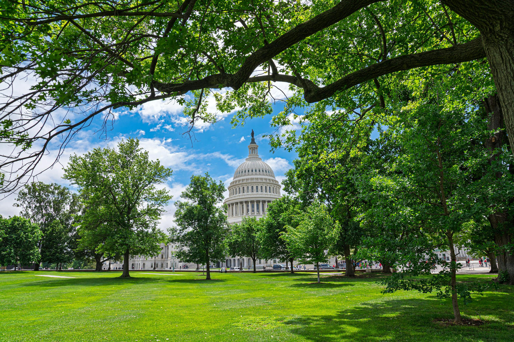
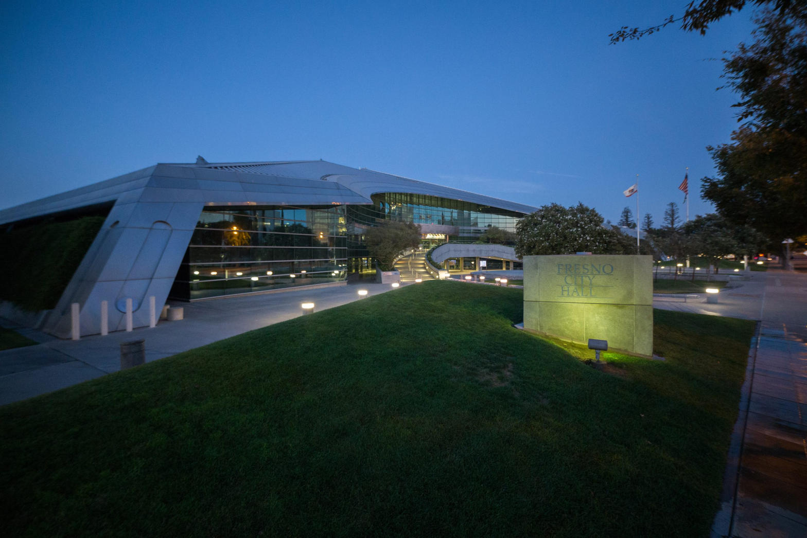

Lord of light, keep us from loving darkness because it is convenient. Amen.
Freedom is not a slogan on a bumper. Freedom is the space in which a person can tell the truth without being punished for it, keep what is his, and answer to God rather than to a machine that eats public money and calls the meal compassion.
John 8:32
And you will know the truth, and the truth will set you free.
That is not a campaign line. It is a law of the soul. A people who will not look at what is in front of them are not free. They are managed. A city that will not name waste, fraud, vacancy, and vice is not compassionate. It is captured.

Start here, in the Tower District, District 3. This is not Washington. This is the street you walk. Buildings sit dead for years while tax dollars are spoken of as if they were holy water. Grants move. Pilot programs appear. One vacant-property effort yields a single documented fine after a year of inspections. Council chambers fill with language about safety and equity while alleys, storefronts, and families live with the remainder. That remainder is blight, fear, and the quiet understanding that the people who collect the taxes do not feel the same heat the people who pay them feel.

Call that what it is. Stewardship failed.
Luke 16:10
If you are faithful in little things, you will be faithful in large ones. But if you are dishonest in little things, you won’t be honest with greater responsibilities.
Public money is not the Lord’s tithe, but it is taken in His name when officials say they serve the poor, the sick, the child, and the stranger. When those dollars are commandeered by sloth, patronage, empty buildings, and programs that cannot survive a camera, the sin is not only theft of treasure. It is theft of trust.
The chain does not stop at Olive and Wishon. City hall answers to Sacramento. Sacramento answers to Washington. At every rung the same temptation appears. Take what was given for the common good and turn it into a shield for the people who administer it. Federal funds for care, housing, hospice, child care, and immigration services were meant to bind up wounds. Some of that work is honest. Some of it is a shell. The country has watched large fraud cases, federal suspensions, state charging announcements, and videos of empty rooms billed as full. Reasonable people can argue about any one clip. They cannot argue that waste on this scale is a rumor. It is a record.
Ephesians 5:11
Take no part in the worthless deeds of evil and darkness; instead, expose them.
That is not permission to hunt a family at a private door. It is a command not to bless the dark just because the dark has a grant number.

Then comes the reflex of power. When a young investigator named Nick Shirley pointed a camera at sites he said were bleeding public money, California did not only prosecute fraud. Assemblymember Mia Bonta carried AB 2624, later signed into law, expanding the Safe at Home program to immigration support service workers. Critics named it the Stop Nick Shirley Act. Defenders said it was only protection from doxxing and threats. The text that matters to a free people is this. After a written demand, posting certain images or personal information of a covered person can open a civil path to damages set at triple the harm or four thousand dollars, whichever is larger, plus fees. The state says it is shielding workers. The whistleblower says it is shielding the pipeline. Both claims now sit in a lawsuit. Those claims are contested in court. The principle is not.
John 3:20
All who do evil hate the light and refuse to go near it for fear their sins will be exposed.
A government can fear threats against workers. A government can also fear a camera. Those are not the same fear.
Luke 8:17
For all that is secret will eventually be brought into the open, and everything that is concealed will be brought to light and made known to all.
What would He say about a four-thousand-dollar hammer hanging over the person who publishes what his eyes saw? He would not bless a mob. He would not bless a lie told for clicks. He would not bless a rule that treats light as violence.
Isaiah 5:20
What sorrow for those who say that evil is good and good is evil, that dark is light and light is dark, that bitter is sweet and sweet is bitter.
When the penalty for speaking is clearer than the penalty for taking, the city has chosen a master. Rob Bonta’s office has announced hospice fraud charges measured in the hundreds of millions. That fact belongs in the same sermon as the bill his wife authored. A government can arrest thieves on Tuesday and write a privacy wall on Wednesday. The people are not required to clap for the wall.

The sins are not only in the dais. They are in us. We vote for the man who talks like our team. We take the benefit and look away from the invoice. We treat tax dollars as if they fell from the sky instead of from a neighbor’s wage.
Proverbs 29:25
Fearing people is a dangerous trap, but trusting the Lord means safety.
The trap is not only in Sacramento. It is in the pew, the comment thread, and the quiet bargain that says, do not make trouble and maybe the check will still come.
How then is freedom achieved?
First, by telling the truth in the smallest room. If District 3 has vacant hulks, say so. If a council speech turns a local failure into a national morality play, name the dodge. If federal money is flowing through a building that will not open its door, ask why. Truth is not cruelty. Silence is.
Malachi 3:7
Now return to me, and I will return to you, says the Lord of Heaven’s Armies.
Second, by repentance that costs something. Officials must end what does not work. Citizens must stop treating public money as a second income and private vice as someone else’s problem. A city that will not repent will only hire more staff to explain the ruin.
Third, by courage that stays inside the law. Expose facts. Do not invent crimes. Do not need a mob. The First Amendment is not a toy, and a four-thousand-dollar civil hammer is not a small thing when it hangs over the person who brought a camera to a publicly funded door. Fight the statute in court if you must. Do not become the thing you hate.

2 Corinthians 3:17
For the Lord is the Spirit, and wherever the Spirit of the Lord is, there is freedom.
Fourth, by fearing God more than the chain of office. City council, attorney general, Congress, White House. Every one of them is dust. They can fine, smear, and stall. They cannot own a conscience that belongs to God.
Galatians 5:1
So Christ has truly set us free. Now make sure that you stay free, and don’t get tied up again in slavery to the law.
That yoke is not only a foreign king. It is the local habit of looking down when the till is open.
Freedom in the Tower District will not arrive as a parade. It will arrive as a people who keep books, keep their word, and keep asking where the money went. It will arrive when a vacant lot is no longer a strategy. It will arrive when a camera is answered with records instead of a demand letter. It will arrive when the poor are actually served and the fraud is actually stopped, even if the fraud wears the costume of ministry.
Micah 6:8
No, O people, the Lord has told you what is good, and this is what he requires of you: to do what is right, to love mercy, and to walk humbly with your God.
Until that is the budget and the ballot, the sermon stays short. The truth still sets free. The lie still enslaves. Choose which one you will fund with the next dollar, the next vote, and the next word you are willing to say in the light.
Notes
Scripture quotations are from the New Living Translation.
Civic references include Fresno’s Tower vacant commercial building pilot reporting, District 3 council proceedings already treated in High Tower civic record, California AB 2624 as signed in August 2026, public debate over its civil damages language, and announced state and federal hospice fraud prosecutions. Claims about any one investigation remain contested where the courts have not finished their work.
Photographs are real-world images of Fresno City Hall, Fresno City Council chambers, and the United States Capitol.